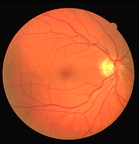
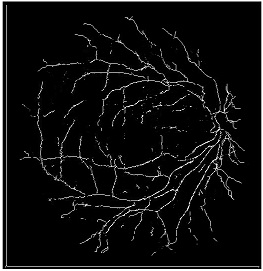

Blood Vessel Segmentation
Motivation
Glaucoma is one of the various eye-related conditions that require early treatment. It is a manifestation of a group of Conditions originated from different causes resulting in an increased pressure inside the eye. Often, if defects were to be detected, they would be too late as significant damage to the nerve fibres may have occurred, causing a certain level of visual field loss. Therefore, as there is no cure for glaucoma, early detection of glaucoma is important because it can minimise damage and vision loss and allow for prompt and adequate treatments in avoiding blindness.ONH is the main marker to detect Glaucoma, but the extraction of ONH from fundus images is not accurate due to the presence of Blood vessels and other fundus pathogens. So in this study Blood vessels segmentation is the first step. I have applied Active contours(snakes) for this purpose.

Fig.1 - Steps for Glaucoma detection
Active Contour Model
For segmenting the blood vessels we have used a deform able model based approach known as Active contours. This model is more generic and robust as it's performance is unaffected by the blood vessels inheriting properties such as vessel crossing and branching and Central Vessel Reflex problem. It also provides the details of the vessel widths and is having greater scope to develop.
Active contour model represents an object boundary or some other salient image features as a parametric curve (which is referred as snake). An Energy function E is associated with the snake is defined as the sum of
The configuration of the snake is driven by the negative energy gradients which are referred as the forces. Using of Gradient Vector Flow method to determine the energy forces reduces the probability of falling into local minima. Active contour model for the segmentation of blood vessels doesn’t include internal energy as the vessel shape is highly torturous. So far three external energies affecting the snake were considered which are
Active contour model represents an object boundary or some other salient image features as a parametric curve (which is referred as snake). An Energy function E is associated with the snake is defined as the sum of
- Internal energy
- External energy
- Image forces
The configuration of the snake is driven by the negative energy gradients which are referred as the forces. Using of Gradient Vector Flow method to determine the energy forces reduces the probability of falling into local minima. Active contour model for the segmentation of blood vessels doesn’t include internal energy as the vessel shape is highly torturous. So far three external energies affecting the snake were considered which are
- Edge distance energy: Edge distance energy helps the snake advance of nodes close to vessel boundaries but it also stops them when they reach a minimum, that is, when they reach an edge point
- Crease distance energy: It corresponds to the creases distance energy that drives the snake along the arteriovenous structure and blocks it if a maximum distance threshold is reached. and
- Inflation force: It is a force without energy term and is the strongest expansion force which expands the snake subject to certain constraints. It is calculated once the snake has been initialized.
Results
We have implemented the snakes on few samples from the DRIVE database available. We were able to extract the creases and
initialize the snakes onto the blood vessels for segmenting them and were successful.
Segmented vessels for a sample image in the drive database is shown below and results for other images in the drive database can be found in the Report
Segmented vessels for a sample image in the drive database is shown below and results for other images in the drive database can be found in the Report

Fig.2 - Image Details: 02_Test, Drive Database.
The image was smoothed using Gaussian filter to remove noise and edge energy of the input image is determined using image gradient vector.

Fig.3 - Creases.
Creases were extracted from the input image using image pre-processing techniques like morphology and edge linking and the Crease Energy of the image was computed
Fig.4 - Active contour output.
After crease extraction, manual initialisation of the snake was done nearer to a blood vessel which is followed by resampling of the Snake and
determination of energy forces at the corresponding resampled points. Then inflation force for the current configuration of the snake was determined.
After determination of all the forces influencing the snake, configuration of the snake was performed using the update equation given by gradient descent
method. The termination of the snake is done once all the points on the snake have zero forces acting on them.
To the Top